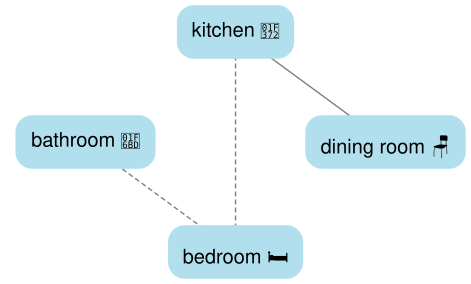
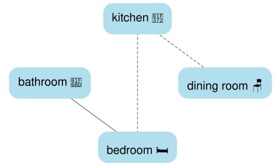

Tip: to return to the game at any time, click the 🧩 icon in the bottom-right corner of the screen.
- The suspects: you’ll meet a colorful cast of characters including Alice, Bob, Carol, Dave, Frida and Eddie. One of them has met an unfortunate end while some of the others are our prime suspects. Spoiler alert: in this tutorial, poor Alice is our victim so we’ll focus on Bob and Carol as suspects.
- The crime: a gruesome murder has taken place, and we need to determine how it happened. Once the fatal act occurs, the victim’s body remains exactly where they fell–this is a crucial detail for your investigation.
- The location: each place can be connected with the others, allowing characters to move
freely. For this tutorial, we’ll explore a chilling mystery set in an eerie Victorian mansion,
where people have been mysteriously disappearing from time to time. The layout changes from case
to case, with three to five rooms to explore. Here’s how the rooms connect:
- The weapons: various weapons are scattered throughout the rooms and the killer will pick up one of the weapons before the crime, but don’t expect them to be where they "should" be. That hammer? It might be in the bathroom instead of a workshop. Logic won’t help you here!
- The timeline: the murder occurred within a specific time window (e.g., between 8:00 and 9:30). You’ll need to reconstruct the movements of the suspects and identify when the fatal blow was struck. There is, however, one important detail that separates these puzzles from other logic whodunit games. Our puzzles try to mimic real life, where statements and clues are often chaotic, redundant or incomplete. In that sense, reconstructing the complete timeline is not necessary to solve the murder, and often it is impossible!.
- The statements: you’ll get statements from suspects and evidence from the scene. Everyone will be telling the truth, but not necessarily the whole story. You will need to carefully deduce and combine facts in order to uncover the truth.
In this tutorial, Alice has been murdered before 9:30 in the mansion, her body found in the kitchen (🍲). We’ll use the Timeline Board to reconstruct this crime. Let’s start with some basic facts we know for sure:
Alice’s body was in the kitchen (🍲) Bob was in the bathroom (🚽) Carol was in the dining room (🪑)

The list of initial clues describe where each character was at 9:30, the end of the timeline. It is your job to deduce, using the suspect statements and other clues, who the killer is, which weapon was used, and when the crime occurred. We can mark the timeline with three simple symbols: ✓ means someone was there, ✗ means they weren’t, and ? means we’re not sure.
At the bottom of the timeline board lies the weapon section, which shows where each available weapon was located. For instance, the killer took the murderer weapon from one of the following locations:
- The hammer (🔨) from the dining room (🪑)
- The pistol (🔫) from the bedroom (🛏️)
- The scissors (✂️) from the kitchen (🍲)
- The rope (🪢) from the bathroom (🚽)
Here’s where it gets fun! Our suspects may move between rooms every 15 minutes (they’re suspiciously punctual), following the location’s layout. They can only move to directly connected rooms during each 15-minute interval, no shortcuts allowed! Think of it like moving across a chessboard, you have to pass through the squares one at a time. For example, if Carol wants to go from the dining room (🪑) to the bedroom (🛏️), she must:
- Move from the dining room (🪑) to the kitchen (🍲) during one 15-minute interval.
- Stay there for any number of 15-minutes intervals (even if other suspects are also there).
- Move from the kitchen (🍲) to the bedroom (🛏️) during another 15-minute interval.
Once the movement rules are clarified, let’s start this case, with the following statement:
☞ Bob: "I saw Alice when I arrived in the bedroom (🛏️) at 8:15"
What can we deduce? Quite a lot actually:
- 🔎 Alice was in the bedroom at 8:15
- 🔎 Bob was also in the bedroom at 8:15
- 🔎 Bob was NOT in the bedroom at 8:00
Click on each deduction to strikethrough the text, which will help you focus on other clues
(try it with the clues shown above next to the magnifying glass!).
Using these deductions we can start completing the timeline board:
The second we finish adding these into the timetable, other deductions start popping up! Since our
suspects haven’t mastered the art of being in two places at once, we can also figure out where they
weren’t:
- 🔎 Alice was not in the bathroom, kitchen, or dining room at 8:15
- 🔎 Bob was not in the bathroom, kitchen, or dining room at 8:15
Let’s add the missing deductions:
But where was Bob at 8:00? This is where our room layout comes in handy:
In this map, the bedroom has solid lines connecting it to the kitchen and bathroom. These solid lines represent direct connections - rooms that characters can move between in one 15-minute interval. The dotted line to the dining room shows an indirect connection - characters need to go through another room first to get there. Since the bedroom connects to both the kitchen and bathroom, Bob could have come from either one. But here’s a solid deduction – Bob couldn’t have been in the dining room at 8:00 because it doesn’t connect to the bedroom!
- 🔎 Bob was not in the dining room at 8:00
Using this information, we can add another deduction into the timeline board:
Other types of clues describe when the suspects spend some time. For instance:
☞ Carol: "I was in the dining room (🪑) from 8:00 to 8:45"
This tells us:
- 🔎 Carol was in the dining room from 8:00 to 8:45
- 🔎 Carol was NOT in any of the other rooms from 8:00 to 8:45
- 🔎 Carol was NOT in the dining room at 9:00
Where was Carol at 9:00? Let’s go back to the mansion map to figure it out:

- 🔎 Carol was in the kitchen at 9:00
- 🔎 Carol was NOT in bedroom, dining room or bathroom at 9:00
Let’s complete the timeline board with all these deductions:
Here’s another juicy clue type:
☞ Bob: "Saw nobody when I arrived to the bathroom (🚽) at 9:00"
Let’s break it down:
- 🔎 Bob was in the bathroom at 9:00
- 🔎 Bob was NOT in the kitchen, bedroom or dining room at 9:00
- 🔎 Neither Alice or Carol were in the bathroom at 9:00
What else can we get from this clue? Let’s take another look to the location graph:

Not only does this clue place Bob in the bathroom at 9:00, but we can backtrack – he must have been in the bedroom at 8:45 since it’s the only way to reach the bathroom! In other words:
- 🔎 Bob was in the bedroom at 8:45
- 🔎 Bob was NOT in the kitchen, dining room or bathroom at 8:45
Time to add our shiny new deductions to the timeline board:
Finally, sometimes we get vague clues from suspects:
☞ Carol: "I heard someone washing the dishes at 8:45"
This clue tells us that someone was in the kitchen. Wait a minute, can you wash dishes in the bathroom? Nope, absolutely ridiculous (looking at you The Sims™). Let’s review what we deduced so far:
- 🔎 Someone was (alive!) at the kitchen at 8:45
- 🔎 Carol was NOT in the kitchen at 8:45
It can be tempting to try to guess where Carol was, but this is not possible. Characters sometimes
can hear or see someone in other rooms, but their location cannot be inferred from this kind of
clue.
However, what we can deduce using our previous observations is who was in the kitchen. Clearly, it
was not Carol (she was elsewhere at 8:45 actually!). Also, we know that Bob was in the bedroom,
which means that Alice was in the kitchen at 8:45.
Our first attempt to deduce facts was not great, so let’s review our previous deduction and refine them:
- 🔎 Alice was in the kitchen at 8:45
- 🔎 Alice was NOT in the bedroom, dining room or bathroom at 8:45
- 🔎 Carol was NOT in the kitchen at 8:45
Back to the timeline board...
☞ A blood-curdling scream from the victim was heard between 8:45 and 9:00
Since our suspects move every 15 minutes like clockwork, the murder had to happen either at 8:45 or
9:00. However, we already know that Alice was alive at 8:45 (and happily washing the dishes). So the
only option here is that murder happened at 9:00. Remember that once the killer strikes, the
victim’s body is never moved, so can easily complete Alice’s timeline until 9:30.
- 🔎 Alice was killed at 9:00 in the kitchen
- 🔎 Alice’s body is in the kitchen from 9:15 to 9:30
Let’s note our findings in the timeline board:
☞ Inspecting the body reveals no signs of stabbing
To discard a particular weapon we need to know what kind of wound they produce. Just click on the type of wound described in the clue (e.g. stabbing) and you will see a list of potential weapons.
Armed with this information, we can discard a weapon in the the bottom of the timeline board table, just clicking the corresponding weapon/location icon: ✂️🍲
Time to put it all together and solve our very first murder. We include all our deductions in the following read-only timeline board:
Think for a while and then click to reveal each solution:
You know what’s really clever about this approach? While we’ve pieced together most of the timeline, there’s still some mystery about Alice’s movements - like where she was at 8:30. And that’s not an oversight - it’s actually showing us something important! Remember that early note about how "reconstructing all the timeline is not necessary to solve the murder, and often it is impossible"? Well, we’re seeing that principle in action. We solved the case conclusively (Carol did it with the hammer at 9:00) without needing to track every single place Alice visited. It’s a perfect example of how these puzzles mirror a more realistic detective work.
Case closed! That was not too hard, wasn't it? Well, if you want to be a super sleuth 🕵️, you need to learn a few additional tips and tricks. The next sections will help you deal with more complicated (and interesting!) cases.
There’s a powerful technique to either confirm or eliminate potential murder weapons quickly, based on this critical clue:
☞ The killer was alone when they retrieved the murder weapon.
By combining this insight with your suspicions about the killer and the timing of the crime, you can make decisive deductions. Let’s examine how this works:
☞ Alice: "I was in the bedroom from 8:00 to 8:30"
Assuming that Alice is NOT the killer and the crime happened after 8:30, then we can arrive the following deduction:
- 🔎 The killer didn’t take the weapon from the bedroom.
On the contrary, if Alice IS the killer and the crime happened after 8:30, then we will need to check if she was alone at 8:00, 8:15 or 8:30 to deduce:
- 🔎 The killer did take the weapon from the bedroom.
Using this deductive technique, we can quickly identify the weapon used and solve the case!
Before starting each mystery, you can decide if the killer can lie in their statements or not. If you are up to a challenge, you will have to consider that every statement from the suspects can be a lie.
Lying during a crime investigation is a serious business! The killer must be very careful since the rest of the suspects will always tell the truth. In practice, they will only provide a false statement if it somehow helps to cover their tracks during the time and place of the murder.
Identifying the killer using unreliable information is usually harder since we don’t know if the statements are true or not. Not all hope is lost, since the rest of the suspects will always tell the truth. Detecting a lie is easy: we need to look for an inconsistency between two statements. Let’s see an example:
☞ Bob: "I was in the kitchen from 9:00 to 10:00"
☞ Carol: "I saw nobody when I arrived to the kitchen at 9:30"
This contradiction immediately tells you something crucial, we know that exactly one of the following statements must be true:
- 🔎 Bob is the killer.
- 🔎 Carol is the killer.
Pro Tip™: begin by assuming all statements are truthful. When you encounter a contradiction, you’ve identified a pair of potential killers.
We can go one step further: once we know (or suspect) who is the killer, we can deduce which statements are true and which ones are false using the time and place of the murder. Let’s take a look at what Bob was saying:
☞ Bob: "Stayed in the bedroom from 8:00 to 9:00"
☞ Bob: "I was in the kitchen from 9:00 to 10:00"
Assuming that Bob is the killer and that the murder happened after 9:30 in the bathroom (🚽), we know that he only provides false claims to avoid getting caught regarding the time and place of the murder. So both of these statements must be true:
- 🔎 Bob was in the bedroom (🛏️) from 8:00 to 9:00
- 🔎 Bob was in the kitchen (🍲) from 9:00 to 10:00
The first statement must be true since Bob has no reason to risk lying, it doesn’t cover the time or place of the murder. The second statement must also be true as we know that Bob is the killer and the time/place of the crime, lying about being in the kitchen doesn’t help him hide anything about the bathroom after 9:30.